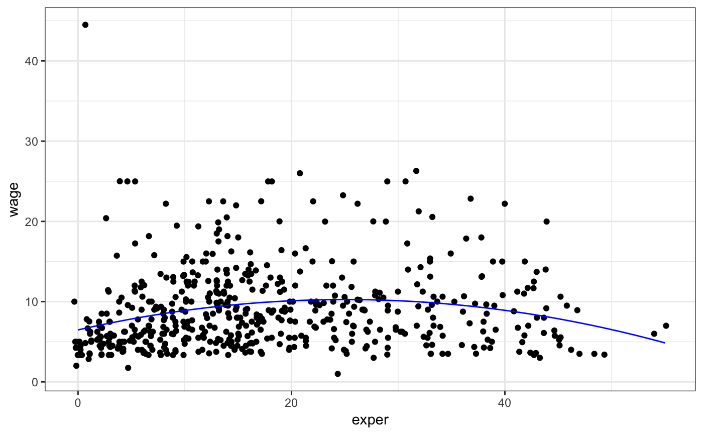
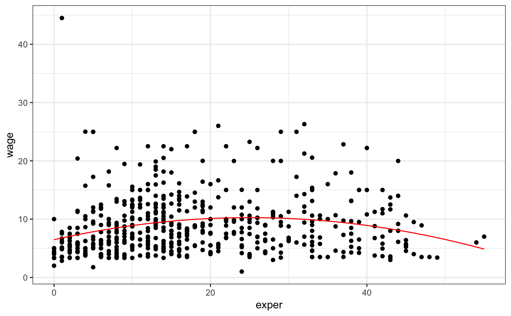

Provides an easy mechanism for creating simple "mathematical" functions via a formula interface.
makeFun(object, ...)
Arguments
| object | an object from which to create a function. This should generally be specified without naming. |
|---|---|
| ... | additional arguments in the form |
Value
a function
Details
The definition of the function is given by the left side of a formula. The right side lists at least one of the inputs to the function. The inputs to the function are all variables appearing on either the left or right sides of the formula. Those appearing in the right side will occur in the order specified. Those not appearing in the right side will appear in an unspecified order.
When creating a function from a model created with lm, glm, or nls,
the function produced is a wrapper around the corresponding version of predict.
This means that having variables in the model with names that match arguments of
predict will lead to potentially ambiguous situations and should be avoided.
Examples
f <- makeFun( sin(x^2 * b) ~ x & y & a); f#> function (x, y, a, b) #> sin(x^2 * b) #> <environment: 0x7fbeb703e270>g <- makeFun( sin(x^2 * b) ~ x & y & a, a = 2 ); g#> function (x, y, a = 2, b) #> sin(x^2 * b) #> <environment: 0x7fbeb703e270>h <- makeFun( a * sin(x^2 * b) ~ b & y, a = 2, y = 3); h#> function (b, a = 2, y = 3, x) #> a * sin(x^2 * b) #> <environment: 0x7fbeb703e270>if (require(mosaicData)) { model <- lm( log(length) ~ log(width), data = KidsFeet) f <- makeFun(model, transformation = exp) f(8.4) head(KidsFeet, 1) }#> name birthmonth birthyear length width sex biggerfoot domhand #> 1 David 5 88 24.4 8.4 B L Rif (require(mosaicData)) { model <- lm(wage ~ poly(exper, degree = 2), data = CPS85) fit <- makeFun(model) if (require(ggformula)) { gf_point(wage ~ exper, data = CPS85) %>% gf_fun(fit(exper) ~ exper, color = "red") } }if (require(mosaicData)) { model <- glm(wage ~ poly(exper, degree = 2), data = CPS85, family = gaussian) fit <- makeFun(model) if (require(ggformula)) { gf_jitter(wage ~ exper, data = CPS85) %>% gf_fun(fit(exper) ~ exper, color = "red") gf_jitter(wage ~ exper, data = CPS85) %>% gf_function(fun = fit, color = "blue") } }if (require(mosaicData)) { model <- nls( wage ~ A + B * exper + C * exper^2, data = CPS85, start = list(A = 1, B = 1, C = 1) ) fit <- makeFun(model) if (require(ggformula)) { gf_point(wage ~ exper, data = CPS85) %>% gf_fun(fit(exper) ~ exper, color = "red") } }